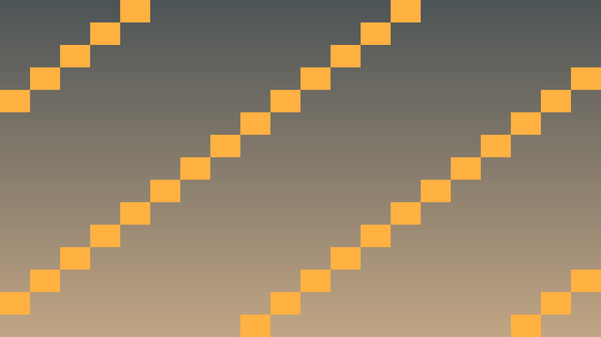
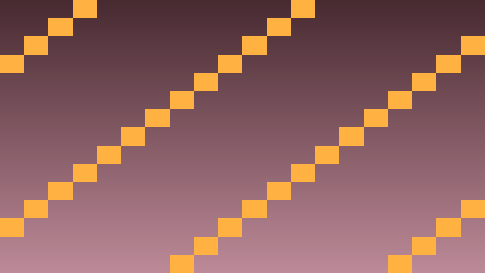

Tavs šīs stundas izaicinājums: Apvienot tēmas prasmes — Godot Scene Tree, C++ klases — pilnvērtīgā Pong arkādes spēlē.
Pong ir klasiska 1972. gada arkādes spēle. Divi spēlētāji vada vertikālas paddles un atsit bumbu pretiniekam. Pirmais ar 5 punktiem uzvar.
C++ klases:
Paddle.cpp — spēlētāja vadītā raķete (W/S vai Augšup/Lejup).Ball.cpp — bumba ar konstantu ātrumu, atlec.Game.cpp — punktu uzskaite, restart.class Game : public Node {
GDCLASS(Game, Node)
private:
int score_left = 0;
int score_right = 0;
Ball *ball = nullptr;
public:
void _ready() override;
void on_score(bool left_player);
void reset_ball();
void update_score_labels();
};Spēlētāja vadāmā raķete.
paddle.hpp/paddle.cpp: Paddle : public CharacterBody2D.float speed = 400.0f, String input_up, String input_down._physics_process(double delta): lasa Input, atjaunina velocity.y, izsauc move_and_slide().Bumba ar fiziku.
Ball : public CharacterBody2D ar float speed = 500.0f._ready(): velocity = Vector2(speed, randf_range(-200, 200))._physics_process: auto collision = move_and_collide(velocity * delta);velocity = velocity.bounce(collision->get_normal());velocity *= 1.05f;Punktu sistēma.
_physics_process: ja x < 0 — labā punkts; ja x > 1280 — kreisā.Pievieno datora pretinieku.
AIPaddle : public Paddle apakšklase._physics_process: paddle.y → tuvināt ball.y ar maksimālo speed.velocity.x norāda virzienu.bool single_player.get_node<Label>("ScoreLeft") references..sconsign.dblite un kompilē no jauna.

void Ball::_physics_process(double delta) {
auto collision = move_and_collide(velocity * delta);
if (collision.is_valid()) {
velocity = velocity.bounce(collision->get_normal());
velocity *= 1.05f;
}
Vector2 pos = get_position();
if (pos.x < 0) get_parent()->call("on_score", false);
else if (pos.x > 1280) get_parent()->call("on_score", true);
}
void Game::on_score(bool left_player) {
if (left_player) score_left++;
else score_right++;
update_score_labels();
reset_ball();
}